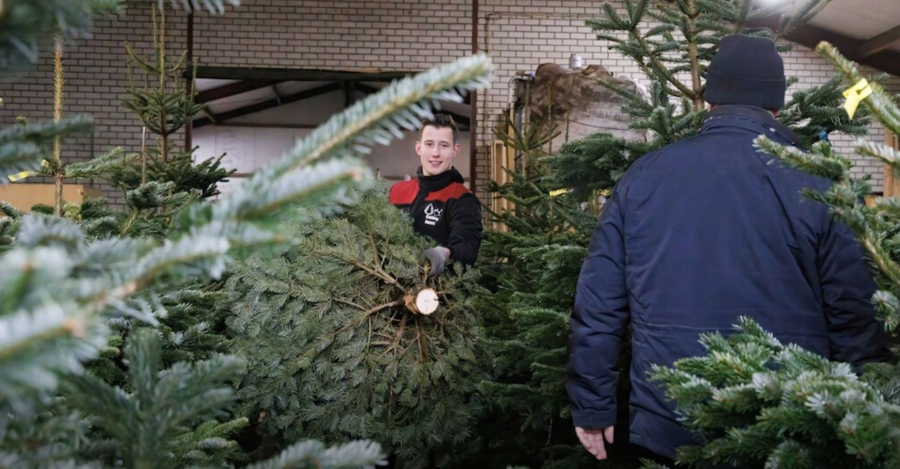
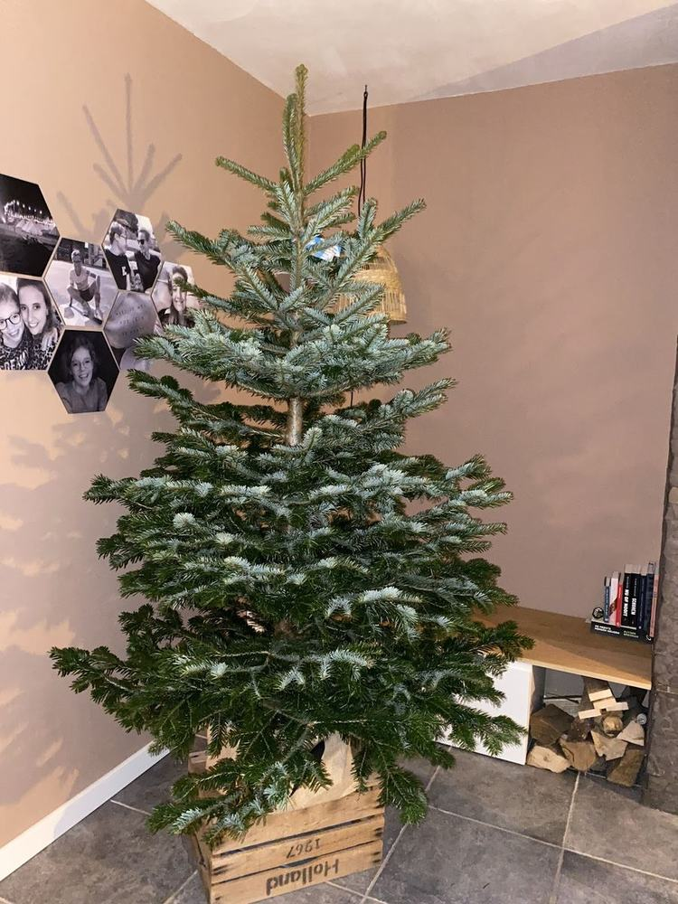
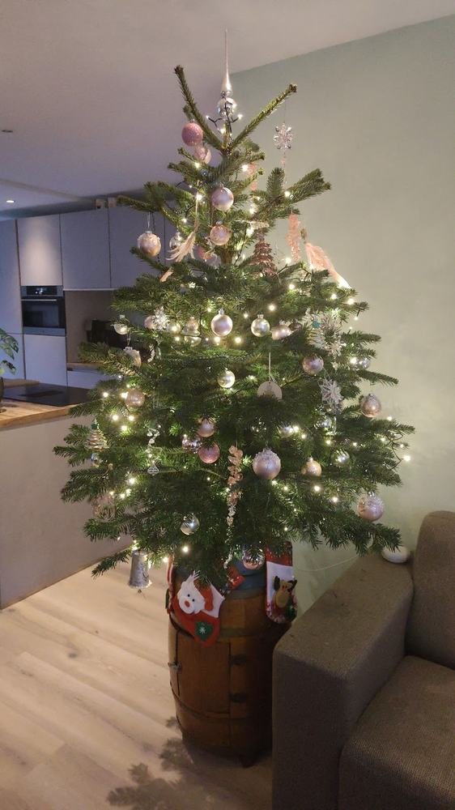
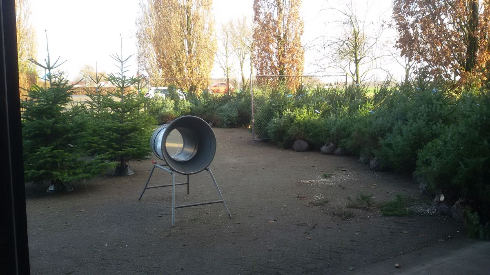
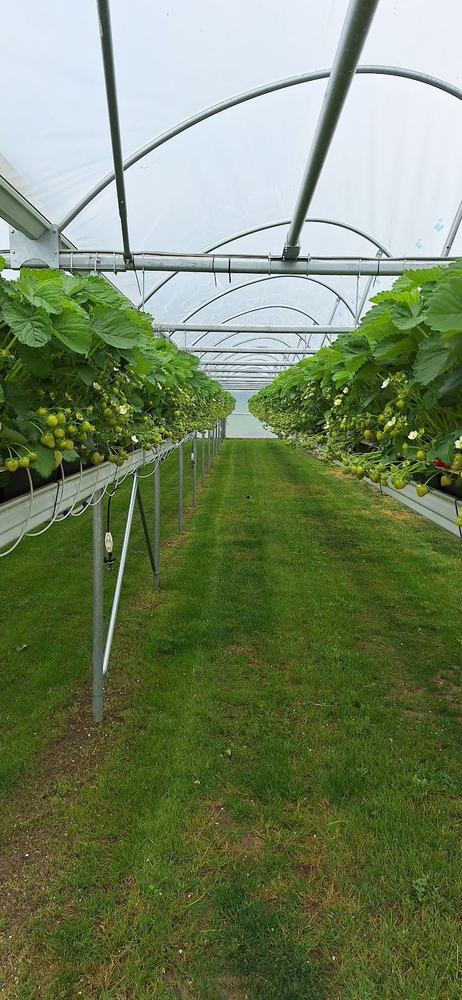
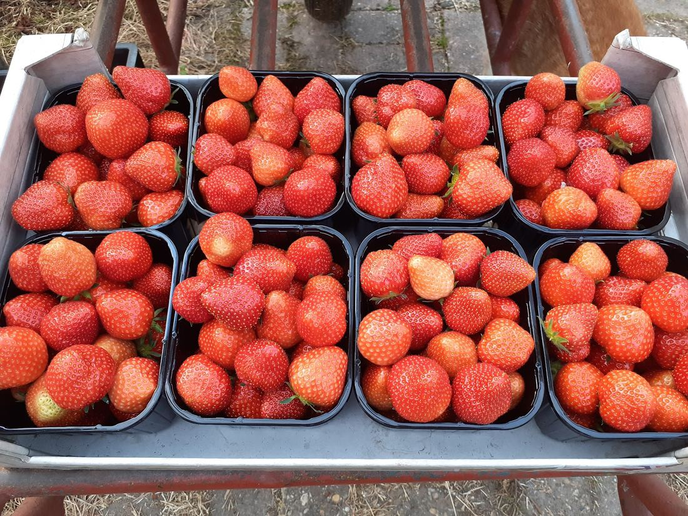
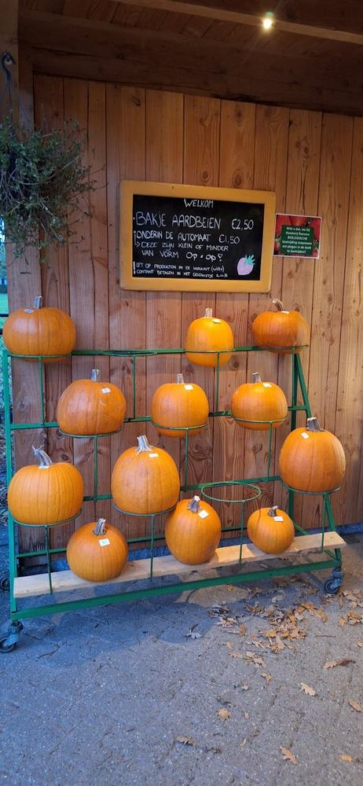
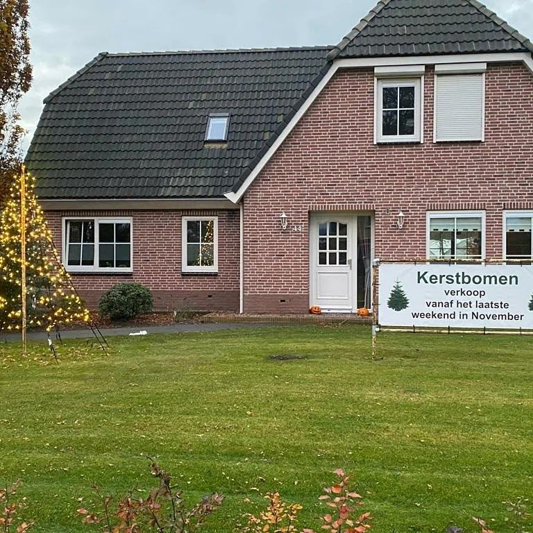

Uw kerstboom uitzoeken bij de kwekerij
Volop keus in Nordmann-kerstbomen aan de Zundertseweg in Etten‑Leur. We zoeken samen met u de juiste boom uit en helpen hem in de auto te krijgen.
"Wederom weer een prachtige kerstboom voor een prima prijs!" – Natasja
Echte kerstbomen, groot en klein
Bij ons staan de Nordmann-kerstbomen klaar in alle maten: groot, klein, breed en smal. Loop rustig rond en zoek de boom die bij u thuis past. Twijfelt u? We kijken graag met u mee.
De bomen staan al op een voet, dus thuis hoeft u alleen nog water te geven.


Voor scholen en verenigingen
Een kerstboom voor de school, de kantine of een kerstmusical? Basisscholen uit de buurt haalden hun bomen al bij ons. Stuur een berichtje, dan denken we mee.
Zo haalt u uw kerstboom
Zonder gedoe: kiezen, op de voet en mee naar huis.
Kom langs
Aan de Zundertseweg 44A in Etten-Leur, vanaf het laatste weekend van november.
Kies uw boom
We luisteren naar wat u zoekt en zoeken samen het juiste exemplaar uit.
Mee naar huis
Op de voet, en we helpen hem in de auto. Uw oude voet ruilt u gewoon om.

Zo blijft uw boom lang mooi
Onze bomen blijven tot ver na kerst mooi, zeker als u deze tips volgt:
- Zet de boom meteen in water na het afzagen.
- Een beetje snijbloemenvoeding in het water helpt.
- Houd hem uit de buurt van de kachel en de verwarming.
Wat klanten zeggen
28 reviews op Google
★★★★★"Ieder jaar weer worden we super goed geholpen. Super vriendelijke verkopers! Ze luisteren goed naar wat je zoekt, zoeken met je mee, ook al zijn daar flink wat bomen voor nodig, ze vinden het juiste exemplaar met je."
Danielle TheunissenGoogle
★★★★★"Wederom weer een prachtige kerstboom voor een prima prijs! Altijd goed advies en een gezellig praatje bij Corné ☺️ tot volgend jaar!!!"
Natasja van der WestenGoogle
★★★★★"Al een aantal jaar op rij hier onze kerstboom uitgezocht. Wat een goede service! De bomen zijn van uitstekende kwaliteit en blijven tot ver na kerst mooi🎄"
Robin FransenGoogle
★★★★★"Wat een mooi bedrijf, met prachtige kerstbomen!!! Volop keus, groot, klein, breed, smal. En wat een super aardige mensen."
Esther DeckersGoogle
★★★★★"Voor onze basisschool waren we op zoek naar echte kerstbomen. Kwekerij Roovers heeft ons hier bij super goed geholpen. Echt een top service, en erg vriendelijk"
Dinanda van Rijen - van HasseltGoogle



In de zomer: verse aardbeien
Buiten het kerstseizoen telen we aardbeien. In de zomer haalt u ze vers uit onze kraam aan de Zundertseweg. Bakjes die klein of minder mooi van vorm zijn, liggen voordelig in de automaat.
Tegen plagen gebruiken we biologische bestrijding.
- Eigen teelt
- Biologische bestrijding
- Verkoop uit de kraam
- In het najaar pompoenen
Over Kwekerij Roovers
"Het is voor mij echt een hobby. Ik houd van het contact met mensen."Corné Roovers in ZuidWest Update
Kwekerij Roovers is een familiebedrijf van Corné Roovers. In december helpt de hele familie mee en neemt Corné drie weken vrij voor de kerstbomen. In de zomer draait alles om de aardbeien.
Veel klanten komen elk jaar terug voor hun boom. Tot volgend jaar!

Vragen? Stuur een appje
Over een boom, de maten, bezorgen of de aardbeien. We reageren zo snel mogelijk.
Kwekerij Roovers
Kerstbomenverkoop vanaf het laatste weekend van november.